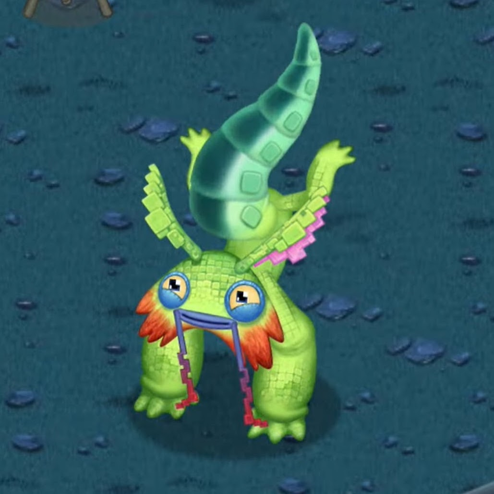

The Pixolotl is a Supernatural born rascal, through and through. Its gymnastic ability and insatiable appetite for computer chips (and dip) can cause mayhem: the Monster has been observed using its tail as a paddle, climbing ice floes, getting trapped in plumbing, and more. Some Wublins believed if the Pixolotl only had a Castle to roam around in, it would settle down... but alas, no such Castle exists on Wublin Island.
